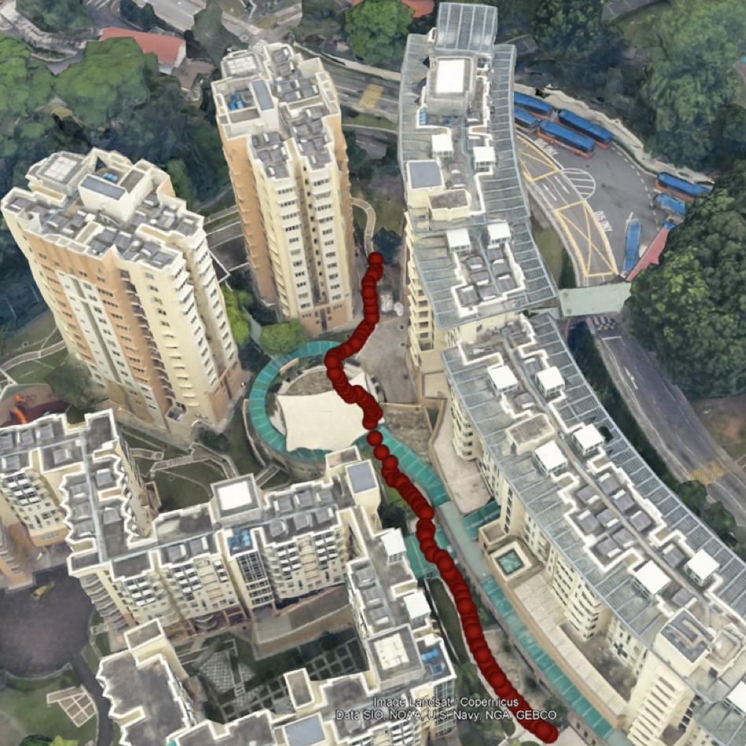
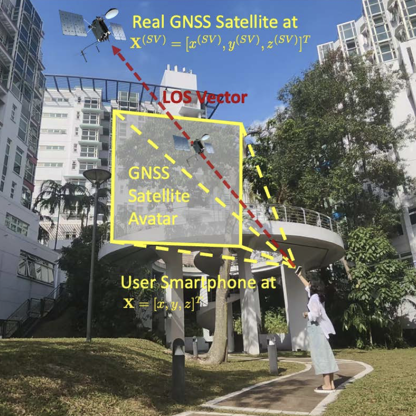
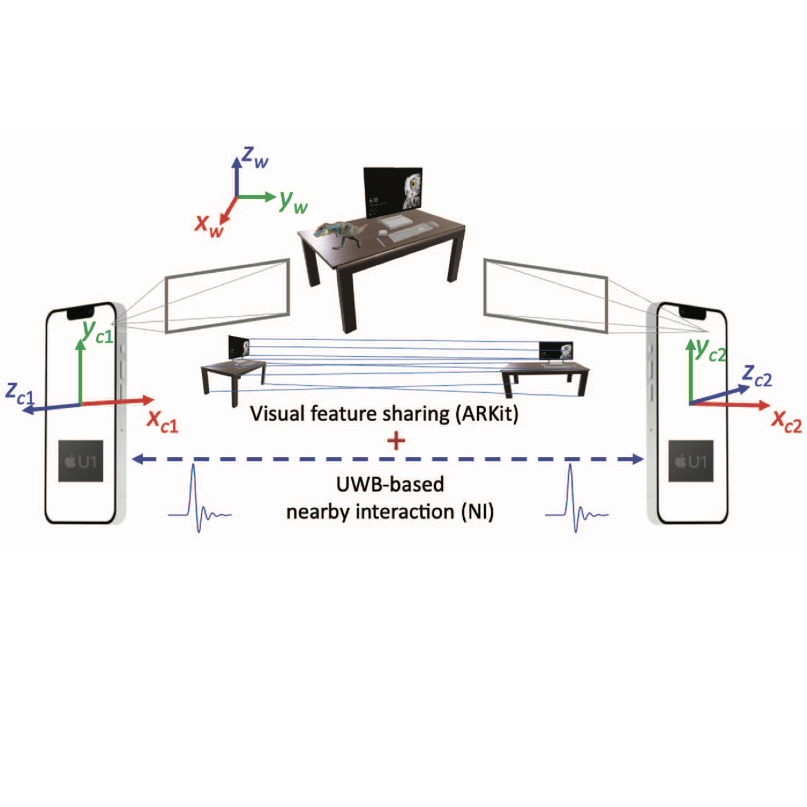
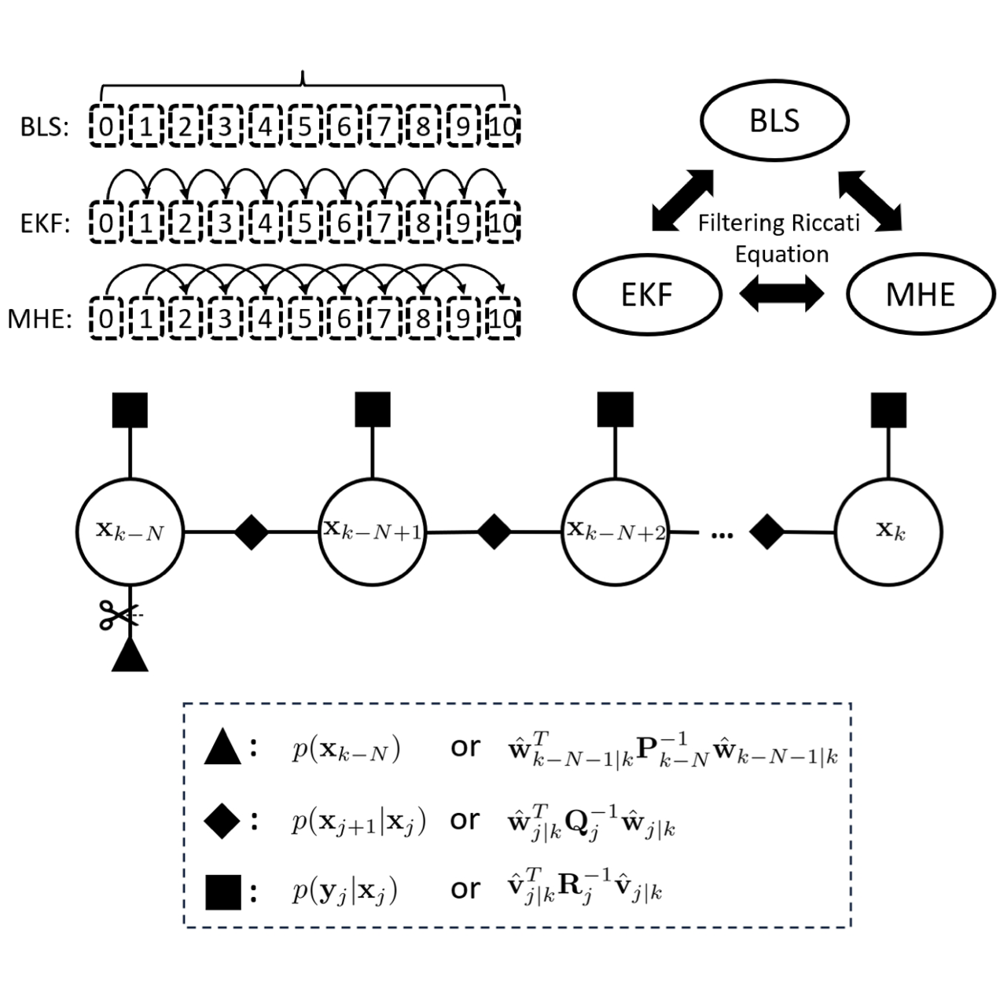
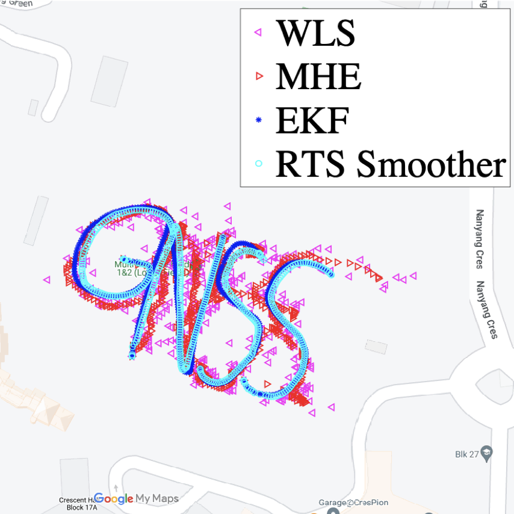

Your browser does not support the video tag.

NeRC: Neural Ranging Correction through Differentiable Moving Horizon Location Estimation
Xu Weng ,
KV Ling ,
Haochen Liu ,
Bingheng Wang ,
Kun Cao
ACM/IEEE SenSys , 2026 (Acceptance Rate: 19%) code
/
arXiv
A data-driven framework for correcting ranging errors, which is trained end-to-end using location-related loss. When combined with Euclidean
distance field cost maps, NeRC can be trained using unlabeled data.
PrNet: A Neural Network for Correcting Pseudoranges to Improve Positioning With Android Raw GNSS Measurements.
Xu Weng ,
KV Ling ,
Haochen Liu
IEEE IOTJ , 2024
code
/
arXiv
A satellite-wise MLP is designed to regress pseudorange errors from six satellite, receiver,
context-related features derived from Android raw GNSS measurements. A novel method for labeling pseudorange errors
are proposed.
Your browser does not support the video tag.

GnssQuest: Questing for Suitable GNSS Satellites through Augmented Reality
Xu Weng ,
Yuhui Jin,
KV Ling
ACM SenSys Poster Abstract , 2024
An Augmented Reality (AR)-assisted framework to help exclude Non-Line-of-Sight (NLOS) satellites
to improve GNSS localization using mobile devices.
Your browser does not support the video tag.

UarLogger: Logging Measurements from UWB and AR Sensors on iOS Devices
Xu Weng *,
KV Ling
(* Equal contributions)
ACM/IEEE IPSN Poster Abstract , 2024 (Best Poster Runner-up Award) code
A tool to log the relative location measurements from UWB and AR sensors mounted on iOS devices, as well as context-related data.
Your browser does not support the video tag.

Receding Horizon Recursive Location Estimation
Xu Weng ,
KV Ling ,
Ling Zhao
Preprint , 2025
arXiv
A framework unifying extended Kalman filter (EKF), factor graph optimization (FGO), and moving horizon estimation (MHE).
Towards End-to-End GPS Localization with Neural Pseudorange Correction
Xu Weng ,
KV Ling ,
Haochen Liu ,
Kun Cao
IEEE/ISIF FUSION , 2024
code
/
arXiv
/
slides
The first neural ranging correction framework trained end-to-end through a differentiable localization engine.
Your browser does not support the video tag.

Localization with Noisy Android Raw GNSS Measurements
Xu Weng ,
KV Ling
IEEE APWiMob , 2023 (Best Paper Award) code
/
arXiv
An open-source positioning toolbox for noisy Android raw GNSS measurements
{kind=link}